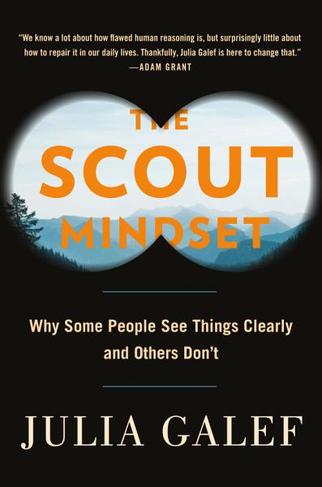

The Scout Mindset, by Galef
Sunday May 2, 2021
The metaphor is soldier vs. scout. The advice is broadly good. With no real discussion of epistemology but an implicit (roughly positivist?) assumed worldview, I felt interesting foundational discussion was elided. There was also little directly on “hard” (not yet known or unknowable) questions. My critique is principally that I wanted more.

Quotes and notes
"our judgment isn’t limited by knowledge nearly as much as it’s limited by attitude." (page x)
"In “Persuasion,” we saw that law students who are randomly assigned to one side of a moot court case become confident, after reading the case materials, that their side is morally and legally in the right. But that confidence doesn’t help them persuade the judge. On the contrary, law students who are more confident in the merits of their own side are significantly less likely to win the case—perhaps because they fail to consider and prepare for the rebuttals to their arguments." (page 27)
This cites Eigen and Listokin, and I don’t have access or inclination to read the paper just now, but it seems like there’s a claim here like “confidence causes bad performance” and I wonder whether possible confounds have been considered. To me, “lower quality lawyer causes both confidence and bad performance” seems plausible.
"Having an accurate map doesn’t help you very much when you’re allowed to travel only one path." (page 40)
Page 45 starts an exploration of Kahan’s famous paper on scientific polarization increasing with education. Perhaps in an effort to avoid alienating any readers, the tools of the scout are not applied to settle the question of whether global warming is real. The opportunity to engage one way or another with the idea of naive realism is not taken.
In Harford’s treatment of Kahan, I really appreciated the emphasis on curiosity being essential for “scout-like” thinking.
I think I hadn’t seen the idea of Blind Data Analysis mentioned on page 55, citing Nuzzo. Nice! Will keep this in mind.
"It [being critical of a study with undesirable results] prompted me to go back through the studies I had been planning to cite in my favor, and scrutinize their methodology for flaws, just as I had done with the pro-soldier mindset study. (Sadly, this ended up disqualifying most of them.)" (page 68)
I’m not sure to what extent this is a joke; I thought it was funny as I read it. But seriously, I wish people generally would say more about determinations such as this.
I might be a soldier on this, but I don’t love quantifying uncertainty in the manner of the calibration game introduced starting on page 75. I thought a little bit about why.
- For simple matters of fact, uncertainty is ignorance. It just isn’t that interesting, or useful. You can go check and get 100% (or close) confidence.
- For predictions about the future, there are interesting questions about what confidence means (is the universe deterministic? what is knowable?) and I think there’s no way to know whether your prediction at a given time is calibrated. The advice is to update your estimate over time, after all. If I say event x (to be evaluated in a week) is 20% likely today but 10% likely tomorrow, was I "right" at those respective times? Did the probability change, or just my estimate? Is there such a thing as "correct probability given what you know," likely different from true probability?
- For difficult propositions, there is no oracle; you can’t calibrate. Worse, consensus can change over time. When it was consensus, what confidence in aether would have been appropriate? How confident should you be in a research result before it comes out that an error in analysis invalidates it? How confident should you be in a value judgment?
- If we’re serious about quantifying confidence, shouldn’t we also estimate confidence in our confidence? Like: I’m 60% confident, plus or minus 10pp. This seems necessary, to allow for things like mistaken beliefs about current evidence. It also seems silly.
I’m not sure I have any really coherent argument here. I agree with the general idea of being aware of how sure you are. Somehow I don’t like the exercise of writing down numbers for it.
There is an interesting topic of decision-making in the face of low confidence. What do you do when you know you’re not sure? (Ramble, seems to be my answer.) Maybe out of scope for the book.
"The reality is that there’s no clear divide between the “decision-making” and “execution” stages of pursuing a goal. Over time, your situation will change, or you’ll learn new information, and you’ll need to revise your estimate of the odds." (page 110)
I really agree with this. Planning can be valuable, but following the plan to the letter is often not.
Galef discusses low (10%, 30%) early estimates of “success” from Musk and Bezos (starting page 111). Exploring why they would take such chances, she mentions both expected value (10% of huge is still big) and the idea that even “failure” would be fairly positive. I think expected value is almost always the wrong way to think about significant choices (especially one-shot choices with unclear odds) and I don’t really believe it’s how people tend to think (or should). I think the question of whether something is worth doing, even if it fails is the right question. So I think the balance of emphasis is off here. Expected value is a simple tool, a hammer that people reach for too often, simplifying problems too far. I wouldn’t even mention it in this setting.
"You might think these principles sound obvious and that you know them already. But “knowing” a principle, in the sense that you read it and say, “Yes, I know that,” is different from having internalized it in a way that actually changes how you think." (page 144)
"In his book Sources of Power, decision researcher Gary Klein cites this [explaining away signs of a problem] as one of the top three causes of bad decisions. He calls it a “de minimus error,” an attempt to minimize the inconsistency between observations and theory. Each new piece of evidence that doesn’t fit a doctor’s medical diagnosis can be explained away or dismissed as a fluke, so the doctor never realizes her initial diagnosis was wrong." (page 165)
Exposure to opposing views on social media can increase political polarization cited in chapter 12.
Keep your identity small cited in chapter 14.
"They [a group of citizen scientists] also dove into the politics of government research, familiarizing themselves with how funding was structured and how the drug trials were conducted. The disorganization they discovered alarmed them. “It sort of felt like reaching the Wizard of Oz,” said one activist named Mark Harrington. “You’ve gotten to the center of the whole system and there’s just this schmuck behind a curtain.”" (page 212)
Cites How to Survive a Plague.
Slightly expanded table of contents
- Introduction
- Realize that truth isn't in conflict with your other goals
- Learn tools that make it easier to see clearly
- Appreciate the emotional rewards of scout mindset
- Part 1: The case for scout mindset
- Chapter 1: Two types of thinking
- “Can I believe it?” vs. “Must I believe it?”
- Chapter 2: What the soldier is protecting
- Chapter 3: Why truth is more valuable than we realize
- Chapter 1: Two types of thinking
- Part 2: Developing self-awareness
- Chapter 4: Signs of a scout
- Do you tell other people when you realize they were right?
- How do you react to personal criticism?
- Do you ever prove yourself wrong?
- Do you take precautions to avoid fooling yourself?
- Do you have any good critics?
- Can you point to occasions in which you were in soldier mindset?
- Chapter 5: Noticing bias
- The double standard test
- The outsider test
- The conformity test
- The selective skeptic test
- The status quo bias test
- Core skill: "a sense that your judgments are contingent—that what seems true or reasonable or fair or desirable can change when you mentally vary some feature of the question that should have been irrelevant." (page 87)
- Chapter 6: How sure are you?
- Core skill: "being able to tell the difference between the feeling of making a claim and the feeling of actually trying to guess what's true." (page 87)
- Chapter 4: Signs of a scout
- Part 3: Thriving without illusion
- Chapter 7: Coping with reality
- Chapter 8: Motivation without self-deception
- Chapter 9: Influence without overconfidence
- Part 4: Changing your mind
- Chapter 10: How to be wrong
- Chapter 11: Lean in to confusion
- Chapter 12: Escape your echo chamber
- Part 5: Rethinking identity
- Chapter 13: How beliefs become identities
- Chapter 14: Hold your identity lightly
- Chapter 15: A scout identity